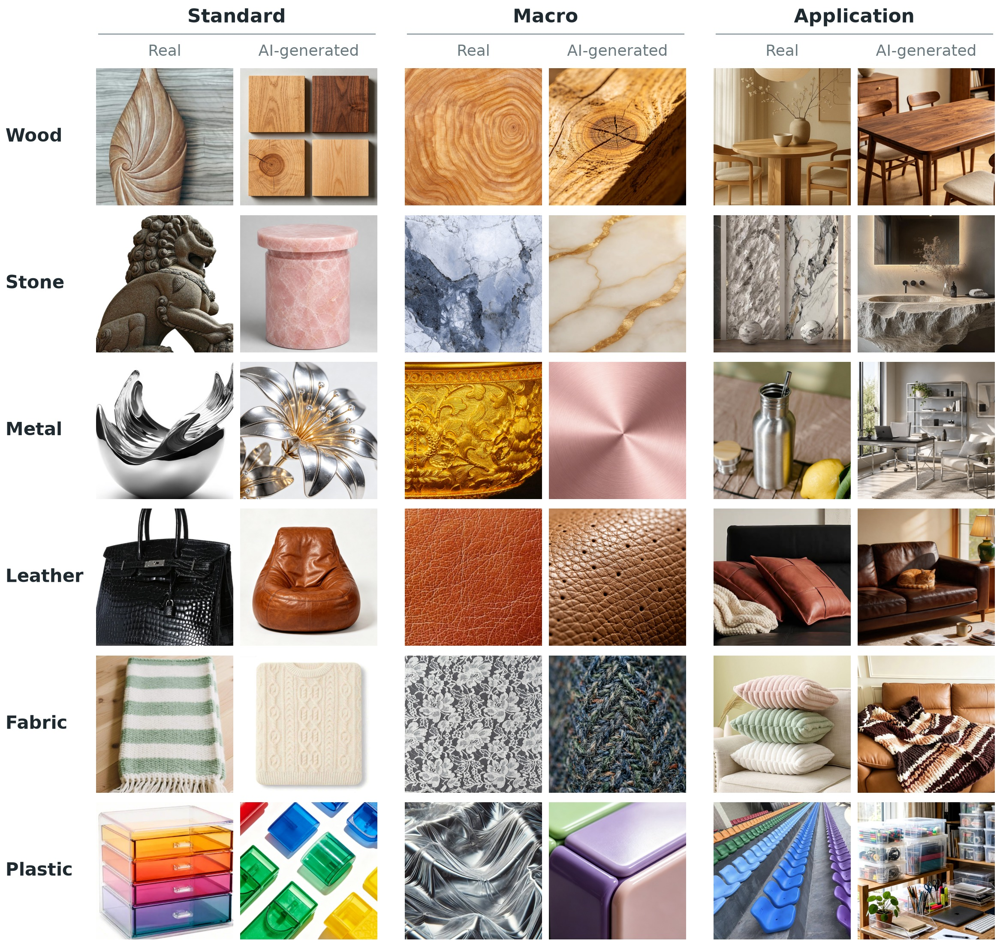
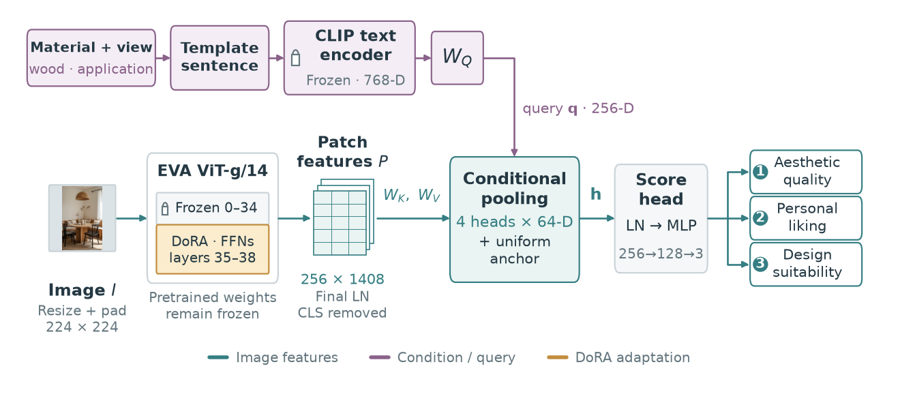
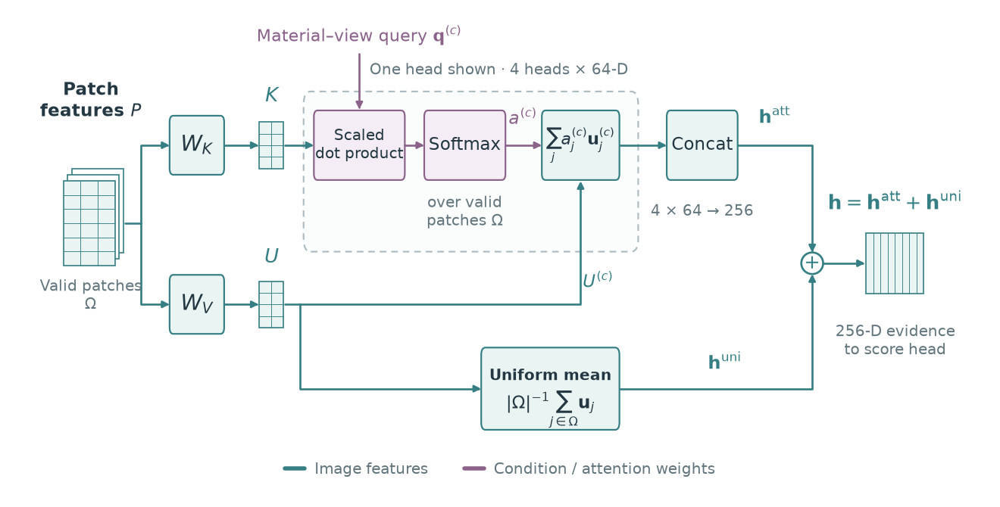

Material aesthetics is central to product and interior design, yet existing data cannot capture it: image aesthetic benchmarks rate whole photographs, and material datasets target recognition. Neither measures how appealing a specified material looks. Then, we introduce MaterialAesthetics, a dataset of 13,163 real and AI-generated images covering six materials (wood, stone, metal, leather, fabric, and plastic) across standard, macro, and application views, each annotated with three holistic ratings and six appearance-attribute ratings.
We further propose Material-View Conditioned Aesthetic Assessment (MVCAA). A frozen text encoder turns the material name and a view description into a query that attends over patch features of a visual encoder adapted with weight-decomposed low-rank adaptation (DoRA). The attended evidence is combined with a uniformly pooled anchor, so scores are predicted from image evidence alone, and only 1.46M parameters are trained. Measured by within-material Spearman correlation, MVCAA reaches 0.448 on a held-out test split, 8.5% above the strongest baseline, which trains about 70 times as many parameters.
The six appearance attributes jointly explain 77.9% of held-out variation in overall aesthetic ratings, and their relative weights shift with material and view. Together, the dataset, model, and evaluation protocol support the study of material aesthetics under different presentation conditions.
Annotators in MaterialAesthetics judged how appealing the designated material itself looks, apart from the background and composition, under three presentation types.
A representative surface with a simple background and even lighting.
Close-ups of texture, pores, fibers, grains, and gloss details.
The material in a product, a space, or a context of use.
10,037 real images from public online sources and 3,126 images generated with text-to-image tools. Thirty annotators with design training rated every image on nine dimensions, three ratings per image, blind to whether it was real or generated.
| Material | Standard | Macro | Application | Real | Generated | Total |
|---|---|---|---|---|---|---|
| Wood | 676 | 692 | 656 | 1,522 | 502 | 2,024 |
| Stone | 981 | 1,065 | 875 | 2,112 | 809 | 2,921 |
| Metal | 742 | 784 | 391 | 1,518 | 399 | 1,917 |
| Leather | 805 | 767 | 384 | 1,374 | 582 | 1,956 |
| Fabric | 929 | 935 | 473 | 1,905 | 432 | 2,337 |
| Plastic | 987 | 785 | 236 | 1,606 | 402 | 2,008 |
| Total | 5,120 | 5,028 | 3,015 | 10,037 | 3,126 | 13,163 |
| Symbol | Dimension | Statement rated on a 1–7 scale |
|---|---|---|
| L1 | Overall aesthetic quality | The material as a whole has high aesthetic quality. |
| L2 | Personal liking | I like the overall visual effect of the material. |
| L3 | Design suitability | The material is suitable for product design or design applications. |
| W1 | Color appeal | The color of the material is attractive. |
| W2 | Gloss appeal | The surface gloss of the material is attractive. |
| W3 | Texture appeal | The texture of the material is beautiful and visually attractive. |
| W4 | Surface order | The surface structure of the material has a sense of order. |
| W5 | Material realism | The material looks real and credible. |
| W6 | Refinement | The material looks refined and premium, with a strong sense of quality. |
Split: 9,215 train, 1,974 validation, 1,974 test images, approximately preserving the proportions of the 18 material–view cells.
Material-View Conditioned Aesthetic Assessment describes the material and its view in a sentence and lets that sentence decide which parts of the image to look at. The score itself is always computed from image evidence.

A frozen text encoder embeds a templated sentence such as a macro view of wood; a learned projection turns it into the query.
Four attention heads weight the image patches by the query, and a uniform mean of the same values keeps image-wide appearance.
Only the feed-forward layers of the last four encoder blocks are adapted. 1.46M parameters are trained in total.

The primary metric, MacroMatSRCC, is the Spearman correlation between predictions and ratings computed within each material and averaged over the six materials and three holistic ratings. It rewards ranking images of the same material, as a designer compares them. Means over five seeds.
| Method | All views | Standard | Macro | Application | PLCC | MAE | Trained params |
|---|---|---|---|---|---|---|---|
| ResNet-50 | .326 | .218 | .299 | .249 | .393 | .560 | 23.5M |
| ViT-B/16 | .366 | .286 | .319 | .279 | .441 | .541 | 85.8M |
| NIMA | .333 | .242 | .266 | .246 | .394 | .550 | 134.3M |
| Charm | .278 | .205 | .167 | .198 | .338 | .572 | 21.5M |
| IAA-LQ | .413 | .354 | .386 | .317 | .492 | .525 | 105.8M |
| MVCAA | .448 | .362 | .416 | .353 | .530 | .507 | 1.46M |
MVCAA improves all-view MacroMatSRCC by 8.5% over IAA-LQ, which uses the same EVA ViT-g/14 encoder and trains about 70 times as many parameters. Inference takes 18.7 ms per image against 24.4 ms for IAA-LQ on one RTX 3090.
| Variant | All views | Standard | Macro | Application | PLCC | MAE |
|---|---|---|---|---|---|---|
| MVCAA | .448 | .362 | .416 | .353 | .530 | .507 |
| w/o DoRA | .420 | .355 | .384 | .328 | .504 | .521 |
| w/o uniform anchor | .434 | .360 | .397 | .341 | .522 | .509 |
| Material-only query | .431 | .354 | .392 | .320 | .517 | .513 |
| Shared learned query | .427 | .357 | .388 | .316 | .511 | .519 |
Removing the condition hurts application scenes most, where other objects and surrounding context compete with the designated material.
The six appearance attributes jointly account for most of the variation in holistic judgment. No single attribute suffices: refinement alone explains 68.7% of the test variance in overall aesthetic quality, while the first principal component of all six explains 77.1%.
Shapley share of explained test variance in L1 (bars on a 0–25% scale). The weights shift with material and view: gloss counts less for stone, wood, and application scenes, where surface order gains weight.
Anonymous submission. The BibTeX entry will be added after the review process.